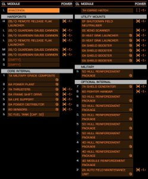

A ship build for the Anaconda approved by A.X.I. detailing ship load out and engineering modifications. It is to be noted that the Shield Generator can be swapped for a Prismatic Generator.

Note that power priorities should be set accordingly to your specific chosen module configuration
Direct Link: AX-Anaconda
Anaconda Wireframe with permission from Anthony Hunt – (elite-dangerous-blog) – Archive Link, as site no longer exists.